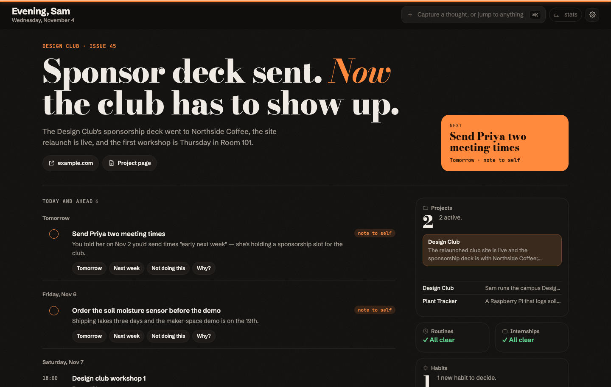
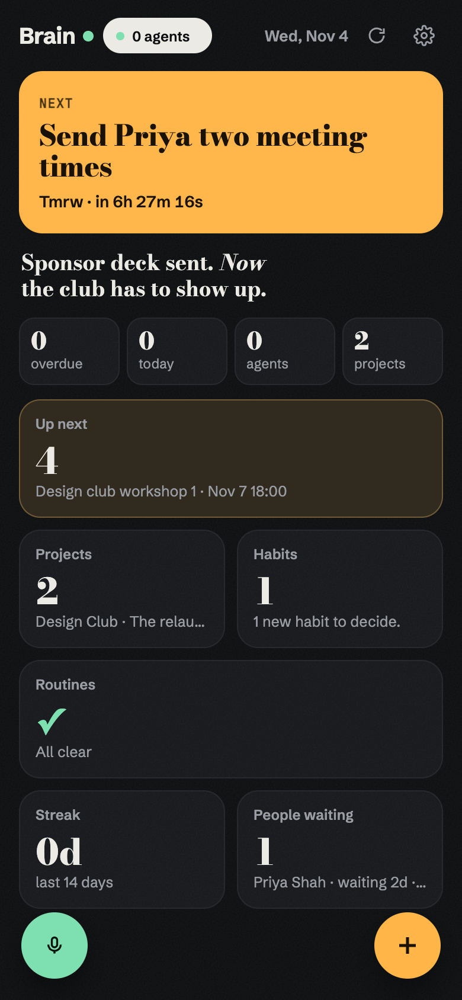

Notes that you and your agent both read and write, so it stops re-deriving who you are every session. Plus a board to see what it's doing, what it learned about you and what's next.
Works with Claude Code and Codex. The notes are plain files, so any agent that can read a folder can use them. Mac app: built for you during setup.
On · Sam asked for shorter replies on Sept 3.
You told her on Sept 12 you'd send times "early next week". She's holding a sponsorship slot for the club.

Everything is plain markdown on your machine. Python standard library, no build step.
tiles/*.md becomes a tile, optionally kept live by a script.Paste one of these into Claude Code or Codex and answer its questions. It asks before anything that touches your accounts.
Or try it in 30 seconds. example/ is a fictional student's notes. Python 3.9+, macOS, Windows and Linux.
git clone https://github.com/zacfink/brain.git cd brain python3 app/server.py --notes example # opens http://127.0.0.1:4747
No notes yet, or you'd rather begin clean. Claude interviews you and writes your first notes.
Set up Brain (https://github.com/zacfink/brain) for me from scratch. Work through it step by step, tell me what each step is for in one line, and ask me before anything that touches my accounts.
1. Clone https://github.com/zacfink/brain.git into ~/Notes/.brain (keep anything already in ~/Notes), link ~/Notes/.brain/bin/brain into ~/.local/bin (create it, and add it to my shell profile's PATH if it isn't there), and read ~/Notes/.brain/README.md and FORMATS.md before going on.
2. Interview me briefly: my name, what I do, my active projects, people I work with, anything due in the next two weeks. Then write my first notes in the FORMATS.md shapes: me.md, now.md, one page per project, people pages, nudges.md, ideas.md, inbox.md and claude/habits.md (two or three habits from what I told you, status "proposed"). If you can see my projects folder, calendar or email, use them to fill gaps, and say what you took from where.
3. Connect yourself: if you're Claude Code, add the SessionStart hook from the README to ~/.claude/settings.json (merge, don't overwrite) and the README's standing instructions to my CLAUDE.md; if you're Codex, run python3 ~/Notes/.brain/codex.py. Then run python3 ~/Notes/.brain/build.py.
4. Start the app with `brain` and check it opens at http://127.0.0.1:4747. On a Mac, ask me whether I want it as an app; if yes, run ~/Notes/.brain/mac/build.sh (needs Xcode's command line tools) to make ~/Applications/Brain.app.
5. Phone (ask me first): add ".brain/" to ~/Notes/.gitignore, create a PRIVATE GitHub repo "notes" with gh, add docs/notes-workflow.yml as .github/workflows/brain.yml plus phone/queue/.gitkeep, commit and push, and wait for the Action's first run to write phone/state.json.
6. Walk me through making the phone key (README → On your phone, step 3); I paste it to you. Then give me my one-tap install link: https://zacfink.github.io/brain/mobile/#c= followed by base64 of {"repo":"<me>/notes","token":"<key>"}. Tell me to open it in Safari, tap Share → Add to Home Screen, and treat the link like a password. Don't save the key anywhere.
7. Finish with a short list: what's set up, what I should try first, and anything that didn't work.Obsidian, Notion, Apple Notes or a markdown folder. Claude builds your Brain from them and never touches the originals.
Set up Brain (https://github.com/zacfink/brain) for me from the notes I already have. Work through it step by step, tell me what each step is for in one line, and ask me before anything that touches my accounts. 1. Ask me where my existing notes are (an Obsidian vault, a Notion or Apple Notes export, or any folder of markdown or text). Treat that folder as read-only: never move, rename, edit or delete anything in it. If it is ~/Notes itself, stop and ask me where Brain's notes should go instead. 2. Clone https://github.com/zacfink/brain.git into ~/Notes/.brain (keep anything already in ~/Notes), link ~/Notes/.brain/bin/brain into ~/.local/bin (create it, and add it to my shell profile's PATH if it isn't there), and read ~/Notes/.brain/README.md and FORMATS.md before going on. 3. Skim my existing notes and tell me in a few lines what you found: active projects, people, anything due soon, recurring themes. Ask me at most 3 short questions to fill gaps. 4. Draft my Brain notes in the FORMATS.md shapes from what you found: me.md, now.md, one page per active project, people pages, nudges.md, ideas.md, inbox.md and claude/habits.md (two or three habits, status "proposed"). After each fact, note which original file it came from. Leave out anything that looks private (passwords, health, money) unless I say to include it. Show me the list of pages before writing them. 5. Connect yourself: if you're Claude Code, add the SessionStart hook from the README to ~/.claude/settings.json (merge, don't overwrite) and the README's standing instructions to my CLAUDE.md; if you're Codex, run python3 ~/Notes/.brain/codex.py. Then run python3 ~/Notes/.brain/build.py. 6. Start the app with `brain` and check it opens at http://127.0.0.1:4747. On a Mac, ask me whether I want it as an app; if yes, run ~/Notes/.brain/mac/build.sh (needs Xcode's command line tools) to make ~/Applications/Brain.app. 7. Phone (ask me first): add ".brain/" to ~/Notes/.gitignore, create a PRIVATE GitHub repo "notes" with gh, add docs/notes-workflow.yml as .github/workflows/brain.yml plus phone/queue/.gitkeep, commit and push, and wait for the Action's first run to write phone/state.json. Then walk me through the phone key (README → On your phone, step 3) and give me my one-tap install link, as in the from-scratch setup. Don't save the key anywhere. 8. Finish with a short list: what's set up, what came from which of my old notes, what I should try first, and anything that didn't work.

A home-screen app with the cover, Up next, notes to self, projects, ideas and capture. It uses a private GitHub repo of yours as the backend. The setup prompt ends with a one-tap install link.